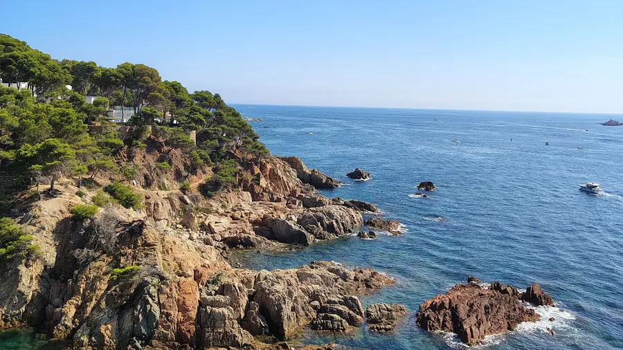

Kiedy jechać do Hiszpanii? Pogoda i najlepszy termin na wyjazd

Do Hiszpanii można jechać przez cały rok — pod warunkiem, że termin dopasujesz do regionu i celu wyjazdu. Inaczej planuje się tydzień na plaży Costa Brava, inaczej zwiedzanie Sewilli, a jeszcze inaczej zimowy urlop na Wyspach Kanaryjskich. Podpowiadamy, jaka jest pogoda w Hiszpanii w poszczególnych porach roku i kiedy jechać, żeby wyjazd był udany.
Pogoda w Hiszpanii zależy od regionu
Hiszpania jest jednym z największych krajów Europy, a jej klimat jest bardzo zróżnicowany. Wybrzeże Morza Śródziemnego, gorący interior, zielona północ i Wyspy Kanaryjskie leżące u wybrzeży Afryki to w praktyce kilka różnych kierunków podróży. Zanim wybierzesz termin, zdecyduj więc, którą część kraju chcesz odwiedzić.
Wybrzeże śródziemnomorskie i Baleary
Costa Brava, Costa Blanca, Costa del Sol oraz Majorka, Minorka i Ibiza to klasyczne kierunki wakacji na plaży. Lato jest tu gorące i suche, a morze jest najcieplejsze w sierpniu i we wrześniu. Wiosną i jesienią temperatury sprzyjają spacerom i zwiedzaniu, choć kąpiel w morzu może wydawać się chłodna.
Andaluzja i środek kraju
Sewilla, Kordoba czy Madryt latem potrafią być bardzo gorące — w lipcu i sierpniu temperatury powyżej 40°C w dolinie Gwadalkiwiru nie należą do rzadkości. Zimą w głębi lądu bywa natomiast zaskakująco zimno, szczególnie nocą i na wyżynach. Najprzyjemniejsze warunki do zwiedzania panują tu wiosną i jesienią.
Północ: Galicja, Asturia i Kraj Basków
Zielone wybrzeże północnej Hiszpanii ma klimat łagodniejszy i wilgotniejszy. Latem jest tu przyjemnie ciepło, ale rzadko upalnie, a deszcz może pojawić się o każdej porze roku. To dobry kierunek dla osób, które źle znoszą upały i wolą piesze wędrówki, regionalną kuchnię oraz chłodniejsze morze.
Wyspy Kanaryjskie
Teneryfę, Gran Canarię, Lanzarote i pozostałe wyspy kanaryjskie często nazywa się krainą wiecznej wiosny. Temperatury są tu łagodne przez cały rok, dlatego Kanary to najpopularniejszy hiszpański kierunek na zimowy urlop. Woda w Atlantyku jest jednak chłodniejsza niż Morze Śródziemne w szczycie lata.
Hiszpania o każdej porze roku — zestawienie
Tabela pomoże szybko porównać sezony. To ogólne wskazówki — przed wyjazdem zawsze sprawdź aktualną prognozę, na przykład w serwisie hiszpańskiej agencji meteorologicznej AEMET.
| Pora roku | Miesiące | Pogoda | Najlepiej na |
|---|---|---|---|
| Wiosna | marzec–maj | ciepło i słonecznie, w głębi lądu chłodne noce | zwiedzanie miast, Andaluzja, piesze wędrówki |
| Lato | czerwiec–sierpień | upały w interiorze i na południu, mało opadów | plaże, Baleary, zielona północ |
| Jesień | wrzesień–listopad | ciepłe morze we wrześniu, później więcej deszczu | plaża poza szczytem, zwiedzanie, winobranie |
| Zima | grudzień–luty | łagodnie na wybrzeżu, zimno w interiorze i w górach | Kanary, narty w Sierra Nevada, miasta bez tłumów |
Kiedy jechać do Hiszpanii na plażę?
Sezon plażowy na wybrzeżu Morza Śródziemnego trwa mniej więcej od czerwca do września. Najcieplejsza woda i najwięcej turystów przypadają na lipiec i sierpień — to także czas wakacji samych Hiszpanów, więc kurorty są wtedy najbardziej zatłoczone. Jeśli zależy Ci na spokoju, rozważ czerwiec albo wrzesień: dni są nadal długie i ciepłe, a plaże wyraźnie luźniejsze.
Na plażowanie zimą wybierz Wyspy Kanaryjskie. Na Półwyspie Iberyjskim w tym czasie można spacerować w słońcu nad morzem, ale na kąpiel jest zwykle za zimno.
„Hasta el cuarenta de mayo no te quites el sayo.”
Przysłowie dobrze oddaje charakter hiszpańskiej wiosny: w ciągu dnia bywa już ciepło, ale wieczory i noce, zwłaszcza w głębi lądu, potrafią być chłodne. Na wyjazd w marcu, kwietniu czy maju warto spakować lekką kurtkę lub sweter.
Najlepszy termin na zwiedzanie miast
Madryt, Barcelonę, Sewillę czy Granadę najlepiej zwiedzać wiosną (od marca do maja) i jesienią (od września do listopada). Temperatury pozwalają wtedy spędzić cały dzień na nogach, a kolejki do najpopularniejszych zabytków są zwykle krótsze niż latem. Bilety do miejsc takich jak Alhambra czy Sagrada Família warto jednak kupić z wyprzedzeniem o każdej porze roku.
Latem zwiedzanie południa Hiszpanii jest możliwe, ale wymaga planu. Hiszpanie sami dostosowują rytm dnia do upału: najgorętsze godziny spędzają w cieniu, a na ulice wracają wieczorem. Warto zrobić tak samo — zwiedzać rano, odpocząć po południu i wyjść na kolację po zachodzie słońca.
Święta i wydarzenia, które warto uwzględnić w planach
Hiszpańskie fiesty to świetna okazja, by poznać lokalną kulturę, ale w ich trakcie noclegi szybko się wyprzedają. Oto kilka najbardziej znanych wydarzeń:
- Las Fallas w Walencji — w marcu, z kulminacją w dniach 15–19 marca.
- Semana Santa, czyli Wielki Tydzień — procesje w całym kraju, najbardziej znane w Andaluzji; termin zależy od daty Wielkanocy.
- Feria de Abril w Sewilli — wiosenny jarmark, który zwykle odbywa się dwa tygodnie po Wielkanocy.
- San Fermín w Pampelunie — od 6 do 14 lipca.
- La Tomatina w Buñol — słynna „bitwa na pomidory” w ostatnią środę sierpnia.
Wysoki i niski sezon — kiedy jest taniej?
Najwięcej turystów i najwyższe ceny noclegów oraz lotów przypadają zwykle na lipiec, sierpień, okres Wielkanocy oraz przerwę świąteczno-noworoczną. Poza tymi terminami łatwiej o wolne pokoje i spokojniejsze plaże. Dobrym kompromisem między pogodą a ceną są najczęściej maj, czerwiec, wrzesień i październik.
Podsumowanie: kiedy jechać do Hiszpanii?
- Na plażę: od czerwca do września, a poza szczytem sezonu — w czerwcu i we wrześniu.
- Na zwiedzanie miast: wiosną i jesienią.
- Zimą: na Wyspy Kanaryjskie albo na narty w Sierra Nevada.
- Jeśli nie lubisz upałów: latem na północ Hiszpanii.
Niezależnie od terminu sprawdź prognozę kilka dni przed wyjazdem i dopasuj plan dnia do pogody — w Hiszpanii to klimat wyznacza rytm życia.
Artykuł ma charakter poradnikowy. Daty wydarzeń i warunki pogodowe sprawdź przed wyjazdem w oficjalnych źródłach.
Planujemy wyjazd do Andaluzji na początku listopada. Czy to dobry moment na zwiedzanie Sewilli i Granady?
Listopad to dobry czas na zwiedzanie — jest znacznie chłodniej niż latem, a turystów jest mniej. Warto jednak zabrać kurtkę na wieczory i liczyć się z deszczowymi dniami.